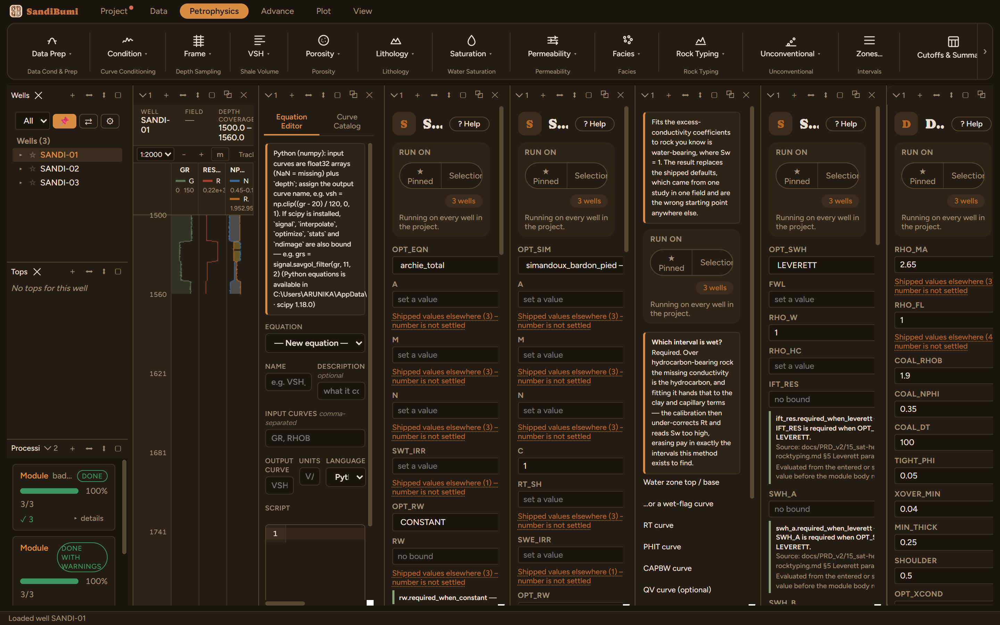

Data Conditioning Flags
Flags samples whose density-neutron readings should not feed porosity or mineral solving: coal, tight rock, gas crossover, and the shoulder samples either side of a flagged bed, where the logs still average across the boundary. COND_FLAG combines them for use as a run mask.
COAL_FLAG: RHOB < COAL_RHOB and NPHI > COAL_NPHI (and DT > COAL_DT where a sonic exists); never in bad hole TIGHT_FLAG: density porosity and NPHI both < TIGHT_PHI XOVER_FLAG: (RHO_MA − RHOB)/(RHO_MA − RHO_FL) − NPHI > XOVER_MIN beds thinner than MIN_THICK are dropped as spikes; SHOULDER_FLAG within SHOULDER of a flagged bed COND_FLAG = coal + tight + bad hole + shoulder (+ crossover when OPT_XCOND = YES)
Step by step: conditioning flags for porosity work
Data Conditioning Flags marks the samples whose density-neutron readings should not feed porosity or mineral solving: coal, tight rock, gas crossover, and (the subtle one) the shoulder samples either side of a flagged bed, where the tools still average across the boundary. COND_FLAG combines them into the run mask the porosity work consumes.
The picks
Shipped starting thresholds throughout. The pane itself marks several "not settled", which is the honest label for numbers that want a per-field review. MIN_THICK and SHOULDER are metre-scale conventions and these wells are metric, so they stand. OPT_XCOND stays NO: the gas zones here will be corrected by the gas-correction step, not discarded, so the crossover flag must not join the exclusion mask. Run the Bad-Hole QC module first; its flag feeds this one.

Run and read
On these wells: 3 clean. The census: XOVER_FLAG 265 samples of gas crossover (the gas sand, as the saturation shelf found it), SHOULDER_FLAG 36, no coal and no tight rock, a clastic gas-bearing section saying exactly what it should. COND_FLAG totals 648, dominated by the bad-hole term. One rule to keep: leave the Mask empty on the condflag run itself. Masking this run with BADHOLE would blank COND_FLAG exactly where it must read 1.
What the application enforces
Everything below is generated from the same manifest the application builds this module’s pane from — descriptions, defaults, sources, ranges and pre-run checks here are exactly what the running application enforces.
Flags samples whose density/neutron readings should not feed porosity or mineral solving. COAL_FLAG: RHOB < COAL_RHOB and NPHI > COAL_NPHI, plus DT > COAL_DT where a sonic exists; a washed-out hole mimics coal, so samples with BADHOLE = 1 are never called coal. TIGHT_FLAG: density porosity (from RHO_MA / RHO_FL — the same parameters, and zone overrides, as the density-porosity modules) and NPHI both below TIGHT_PHI. XOVER_FLAG: gas crossover, density porosity exceeding NPHI by more than XOVER_MIN — coal and bad hole are excluded because they fake the same light-density signature. NPHI must be in matrix units consistent with RHO_MA: limestone-unit neutron against a sandstone RHO_MA reads about 0.04 low in clean water sand, right at the XOVER_MIN threshold — convert the neutron first, then supply a sourced threshold for the declared neutron convention. Flagged beds thinner than MIN_THICK are dropped as spikes (missing samples inside a bed do not split it). SHOULDER_FLAG is the transition adjustment: logs average across bed boundaries, so samples within SHOULDER of a coal / tight bed — or a bad-hole interval at least MIN_THICK thick — still carry mixed readings; masking only the bed itself would leave those shoulder values in the conditioned data. COND_FLAG combines coal, tight, bad hole and shoulder (and crossover when OPT_XCOND = YES — leave NO when gas zones will be corrected rather than discarded); feed it as the Mask on later module runs, but leave the Mask empty on the condflag run itself — masking this run with BADHOLE would blank COND_FLAG exactly where it must read 1. MIN_THICK and SHOULDER are in the depth curve's declared unit; their DEC-077 starting values are metre-scale conventions - rescale for feet wells. Run the badhole module first so its flag is available here.
Input curves
| Role | Description | Resolves to | Required | Notes |
|---|---|---|---|---|
| RHOB | Density log | RHOB | yes | — |
| NPHI | Neutron porosity log (matrix units matching RHO_MA) | NPHI | yes | — |
| DT | Sonic transit time log | DT | no | — |
| BADHOLE | Bad-hole flag from the badhole module | BADHOLE | no | — |
Parameters
Whole-well defaults; per-zone values from the Zones pane take precedence inside their zones (except where a parameter is marked one-value-per-well).
RHO_MA (g/cc)
Matrix density
- Default: 2.65
- Accepted range: 2 to 3.2 g/cc
- Competing shipped values exist for this parameter across installed tools (topic
matrix_density); the pane lists them with sources at the point of choice.
RHO_FL (g/cc)
Fluid density
- Default: 1
- Accepted range: 0.5 to 1.5 g/cc
- Competing shipped values exist for this parameter across installed tools (topic
fluid_density); the pane lists them with sources at the point of choice.
COAL_RHOB (g/cc)
Coal: density below
- Default: 1.9
- Accepted range: 1.2 to 2.4 g/cc
COAL_NPHI (v/v)
Coal: neutron above
- Default: 0.35
- Accepted range: 0.15 to 0.8 v/v
COAL_DT (us/ft)
Coal: sonic above (when DT present)
- Default: 100
- Accepted range: 70 to 160 us/ft
TIGHT_PHI (v/v)
Tight: both porosities below
- Default: 0.05
- Accepted range: 0 to 0.2 v/v
XOVER_MIN (v/v)
Crossover: DPHI - NPHI above (~0.08 for limestone-unit NPHI)
- Default: 0.04
- Accepted range: 0 to 0.3 v/v
MIN_THICK (depth)
Drop flagged beds thinner than
- Default: 0.25
- Accepted range: 0 to 10 depth
SHOULDER (depth)
Shoulder width beyond bed edges
- Default: 0.5
- Accepted range: 0 to 5 depth
Options
OPT_XCOND
Include gas crossover in COND_FLAG
- Choices:
NOYES
- Default:
NO
Output curves
| Name | Description |
|---|---|
| COAL_FLAG | Coal flag (1 = coal) (flag: DIAGNOSTIC_INDICATOR) |
| TIGHT_FLAG | Tight-zone flag (1 = tight) (flag: DIAGNOSTIC_INDICATOR) |
| XOVER_FLAG | Gas crossover flag (1 = crossover) (flag: DIAGNOSTIC_INDICATOR) |
| SHOULDER_FLAG | Bed-transition shoulder flag (1 = shoulder) (flag: DIAGNOSTIC_INDICATOR) |
| COND_FLAG | Combined conditioning mask (1 = exclude) (flag: EXCLUSION_MASK) |